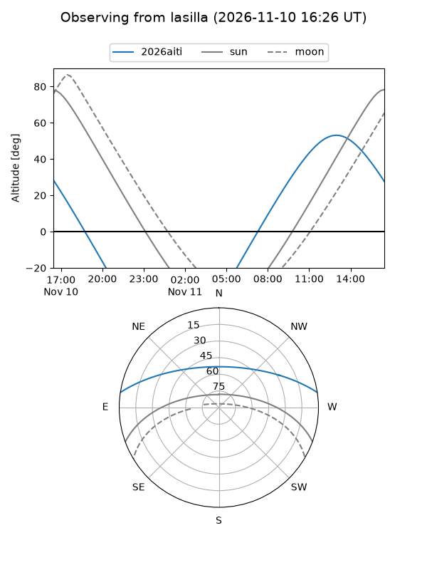
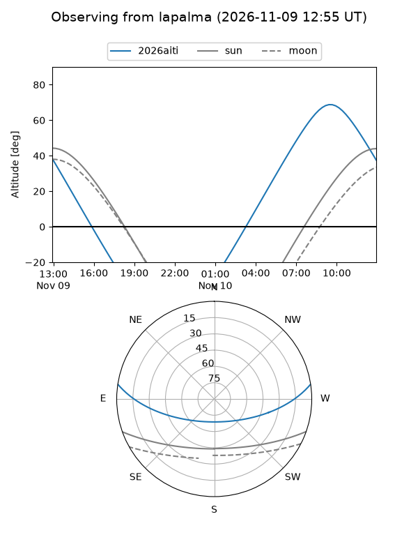
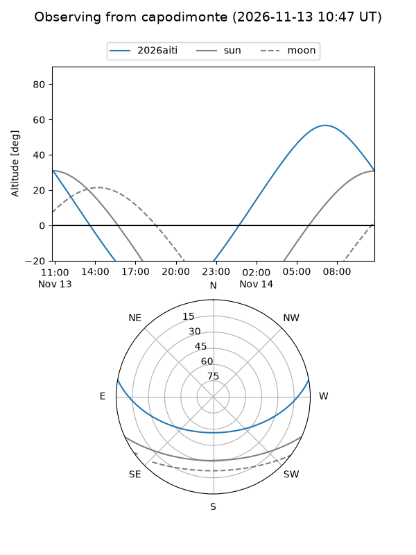
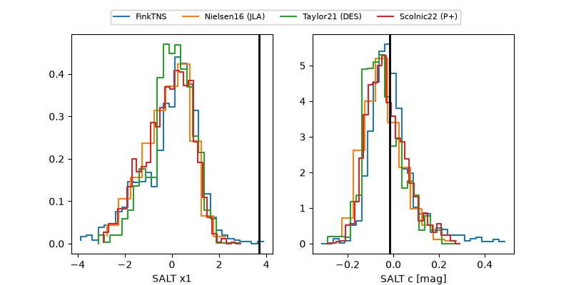

2026aiti
Target 2026aiti at 2026-11-12 13:28
Aliases and brokers:
FINK-ZTF: ztf.fink-portal.org/ZTF26acdjwdc
Lasair-ZTF: lasair-ztf.lsst.ac.uk/objects/ZTF26acdjwdc
ALeRCE-ZTF: alerce.online/object/ZTF26acdjwdc
YSE-PZ: ziggy.ucolick.org/yse/transient_detail/2026aiti
TNS name: wis-tns.org/object/2026aiti
Direct TNS query: direct search
alt names
ZTF26acdjwdc (ztf,fink_ztf)
2026aiti (tns,yse)
Coordinates:
equatorial (ra, dec) = 174.2134,+7.73946
equatorial (HMS+DMS) = 11:36:51.23,+07:44:22.06
galactic (l, b) = (257.1485,+63.76640)
Flags:
peak dt: +12.5
Photometry:
last ztfr=19.78
4 ztfr detections
Lightcurve
Visibility



Additional plots
